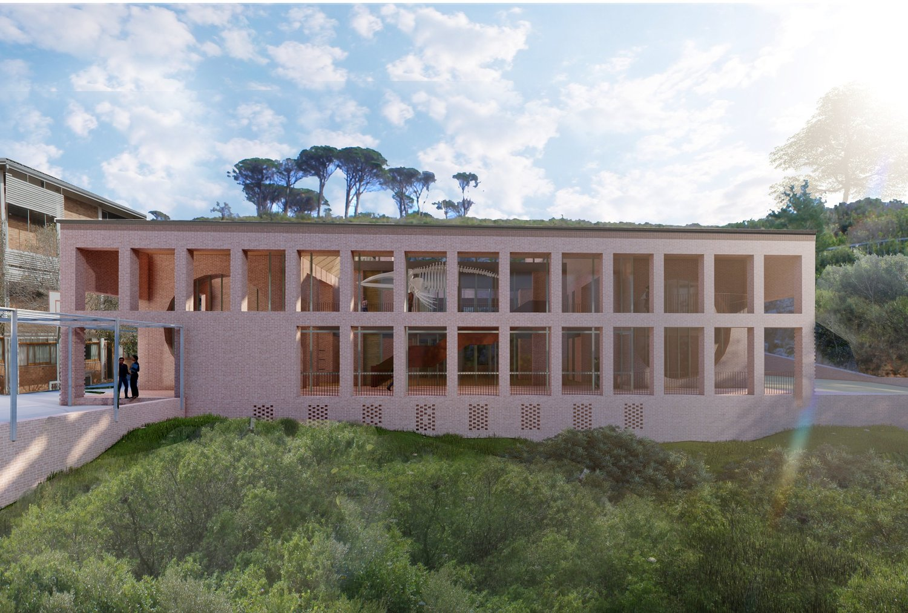
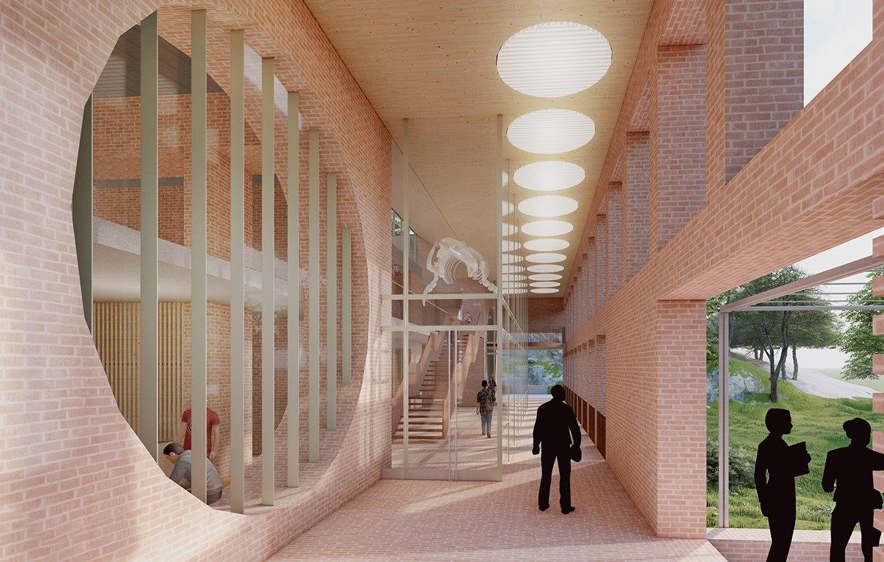
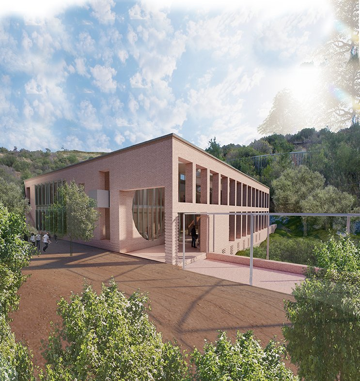
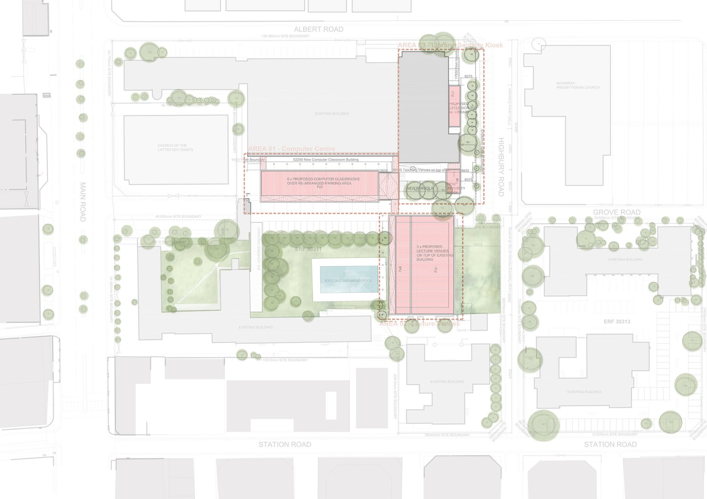
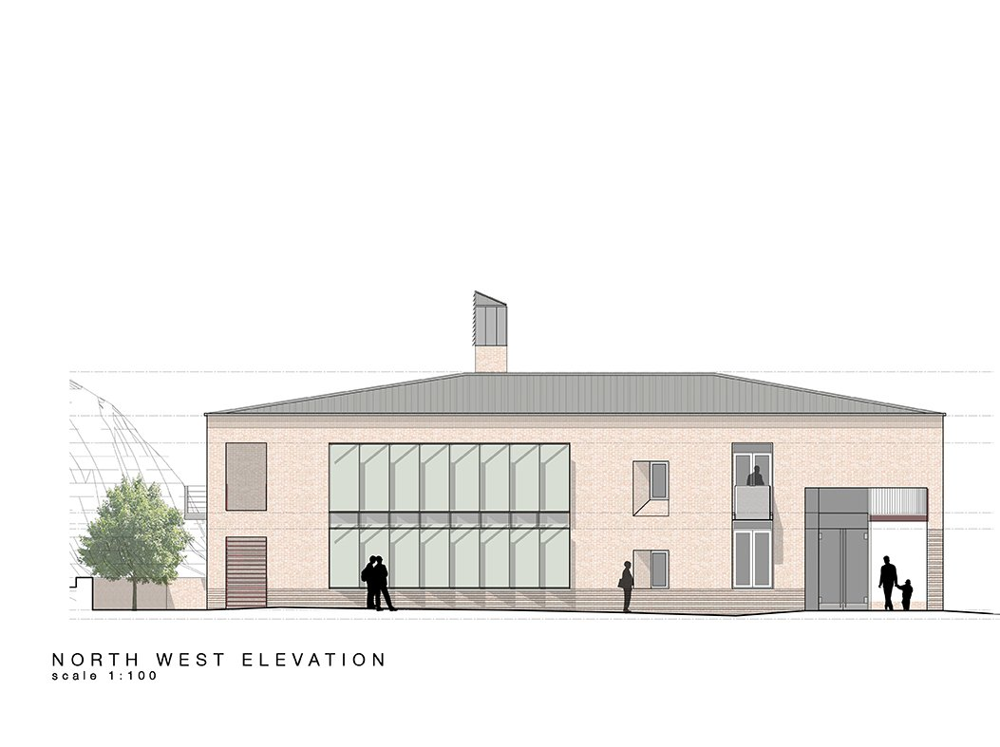
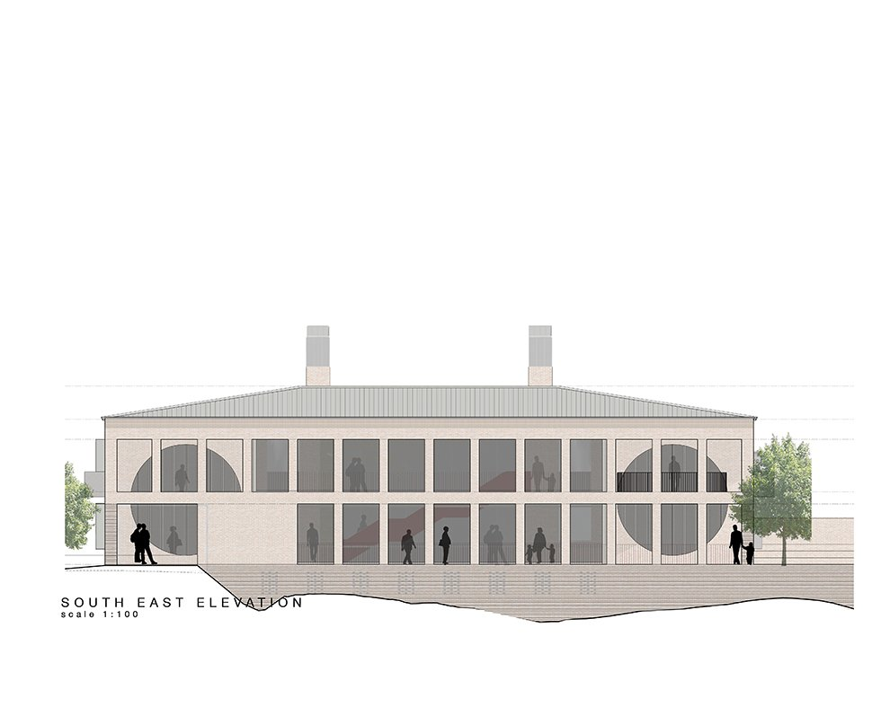
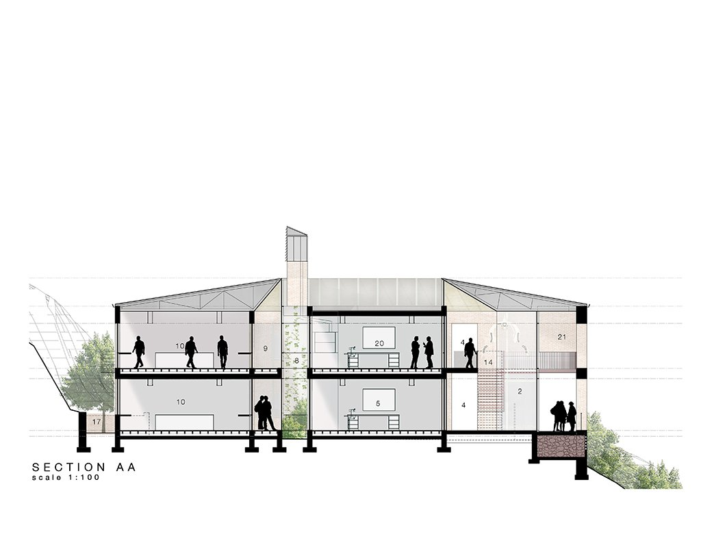
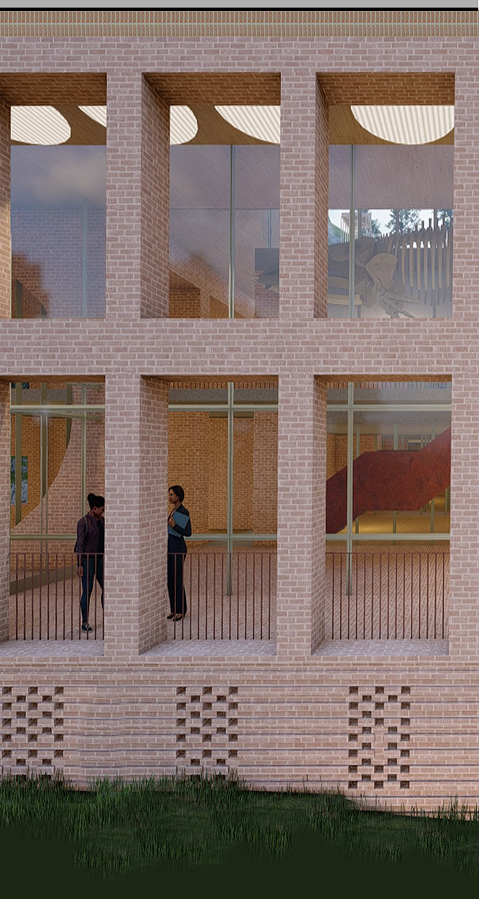
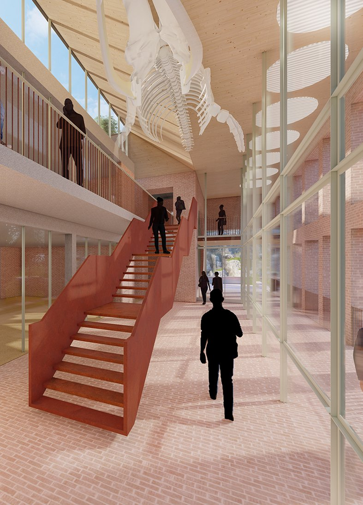

New Science Centre
INVITED COMPETITION ENTRY
Schools are important civic infrastructure elements, as learning environments have the opportunity to enhance teaching and learning and accommodate the needs of all learners.
The design of the new Science Centre provided an opportunity to not only create exceptional learning spaces that inspire learners and teachers, but also propose a wide range of different external spaces around the new building to offer different experiences and a variety of possible interactions between learners and teachers and connects existing school buildings and facilities to new external social areas and nature.
The overview of the design brief called for flexibility in use, ecologically sensitive design and durability, longevity, and ease of maintenance. These requirements were addressed through a ‘robustness’ of building, which is embodied in simple rectilinear planning, a straightforward structural solution, the use of quality materials detailed in a sensitive manner and low technology interventions which create comfortable spaces. These low technology solutions also act as a way for learners to engage with the building on a scientific level . This civic responsibility also hints at the way one should arrange the building, almost as an ‘acropolis’ on the hill – a beacon of knowledge.








